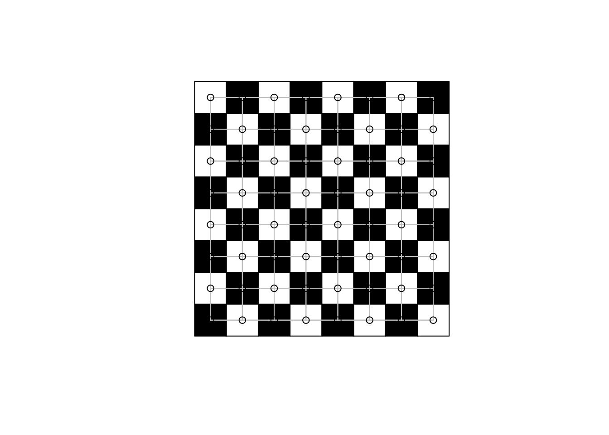
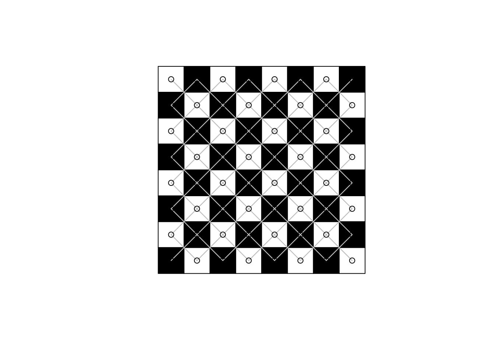
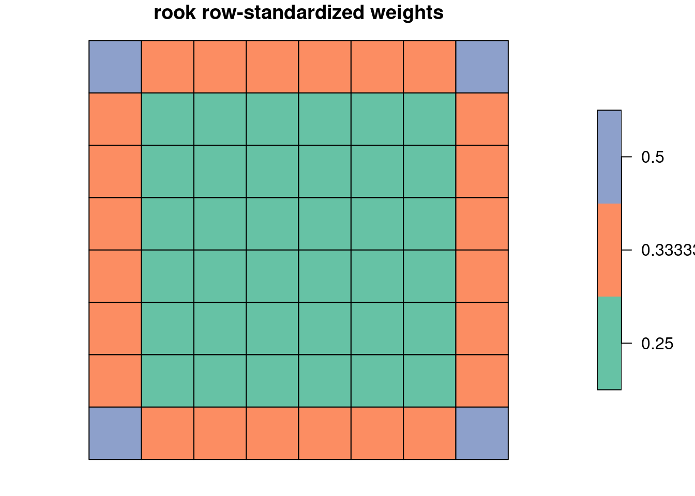
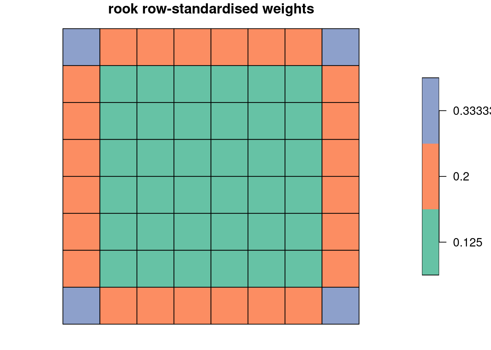

xy <- data.frame(expand.grid(1:8, 1:8), col=rep(c(rep(c("black", "white"), 4), rep(c("white", "black"), 4)), 4))
library(stars)
# Loading required package: abind
# Loading required package: sf
# Linking to GEOS 3.10.2, GDAL 3.4.3, PROJ 8.2.1; sf_use_s2() is TRUE
library(sf)
(xy %>% st_as_stars() %>% st_as_sf() -> grd)
# Simple feature collection with 64 features and 1 field
# Geometry type: POLYGON
# Dimension: XY
# Bounding box: xmin: 0.5 ymin: 0.5 xmax: 8.5 ymax: 8.5
# CRS: NA
# First 10 features:
# col geometry
# 1 white POLYGON ((0.5 8.5, 1.5 8.5,...
# 2 black POLYGON ((1.5 8.5, 2.5 8.5,...
# 3 white POLYGON ((2.5 8.5, 3.5 8.5,...
# 4 black POLYGON ((3.5 8.5, 4.5 8.5,...
# 5 white POLYGON ((4.5 8.5, 5.5 8.5,...
# 6 black POLYGON ((5.5 8.5, 6.5 8.5,...
# 7 white POLYGON ((6.5 8.5, 7.5 8.5,...
# 8 black POLYGON ((7.5 8.5, 8.5 8.5,...
# 9 black POLYGON ((0.5 7.5, 1.5 7.5,...
# 10 white POLYGON ((1.5 7.5, 2.5 7.5,...14 Proximity and Areal Data
14.1 ex 14.1
If dimensionality (point/line/polygon) varies in the data set, geometries must be reduced to the lowest dimension present (usually points). If all the observations are polygonal (polygon or multipolygon), contiguities (shared boundaries) are a sparse and robust neighbour representation (spdep::poly2nb()). Polygons may also be reduced to points by taking for example centroids, but neighbours found by triangulating points may not be the same as contiguity neighbours for the polygons being represented by these centroids (spdep::tri2nb()). If the geometries are multipoint, they must also be reduced to a single point. If the geometries have point rather than areal support, for example real estate transaction data, k-nearest neighbour (spdep::knn2nb(spdep::knearneigh())), graph-based (spdep::graph2nb() applied to the output of spdep::soi.graph(), spdep::relativeneigh() or spdep::gabrielneigh()) and distance-based methods (spdep::dnearneigh()`) may be used.
14.2 ex 14.2
Graph-based functions for creating neighbour objects (spdep::tri2nb(), spdep::soi.graph(), spdep::relativeneigh() and spdep::gabrielneigh()) may not be used if the support of the observations is not that of points on the plane. All other functions may be used with both planar and spherical/elliptical geometries, but the neighbours generated may differ if a non-planar data set is treated as planar.
14.3 ex 14.3
A chessboard is an \(8 \times 8\) grid:
library(spdep)
# Loading required package: sp
# Loading required package: spData
(rook <- poly2nb(grd, queen=FALSE))
# Neighbour list object:
# Number of regions: 64
# Number of nonzero links: 224
# Percentage nonzero weights: 5.46875
# Average number of links: 3.5The rook neighbours also form a grid, where the neighbours share a grid edge:
plot(st_geometry(grd), col=grd$col)
plot(rook, xy, add=TRUE, col="grey")
(queen <- poly2nb(grd, queen=TRUE))
# Neighbour list object:
# Number of regions: 64
# Number of nonzero links: 420
# Percentage nonzero weights: 10.25391
# Average number of links: 6.5625The queen neighbours add neighbours sharing only one corner point:
plot(st_geometry(grd), col=grd$col)
plot(queen, xy, add=TRUE, col="grey")and the difference yields neighbours sharing not more than one boundary point:
plot(st_geometry(grd), col=grd$col)
plot(diffnb(queen, rook), xy, add=TRUE, col="grey")
14.4 ex 14.4
We can access cardinalities using card(), and tabulate their frequencies for the chessboard rook case:
((rook %>% card() -> rc) %>% table() -> t)
# .
# 2 3 4
# 4 24 36Taking the counts found, we can construct the weights corresponding to those neighbour counts:
1/rev(as.numeric(names(t)))
# [1] 0.2500000 0.3333333 0.5000000Plotting the row-standardized weights, we see that they up-weight the neighbours of observations with few neighbours, and down-weight the neighbours of observations with more neighbours:
grd$rc <- as.factor(1/rc)
plot(grd[, "rc"], main="rook row-standardized weights", key.width = lcm(2.5))
We can also use the cardinality frequency table to find counts of neighbours with (increasing) weights:
unname(rev(t))*rev(as.numeric(names(t)))
# [1] 144 72 8This can be confirmed by tabulating the frequencies of weights yielded by nb2listw():
table(unlist(nb2listw(rook, style="W")$weights))
#
# 0.25 0.333333333333333 0.5
# 144 72 8Repeating for the queen case again shows how row-standardization can engender edge effects:
((queen %>% card() -> rc) %>% table() -> t)
# .
# 3 5 8
# 4 24 361/rev(as.numeric(names(t)))
# [1] 0.1250000 0.2000000 0.3333333grd$rc <- as.factor(1/rc)
plot(grd[, "rc"], main = "rook row-standardised weights", key.width = lcm(2.5))
unname(rev(t))*rev(as.numeric(names(t)))
# [1] 288 120 12table(unlist(nb2listw(queen, style="W")$weights))
#
# 0.125 0.2 0.333333333333333
# 288 120 12save(list = ls(), file = "ch14.RData")